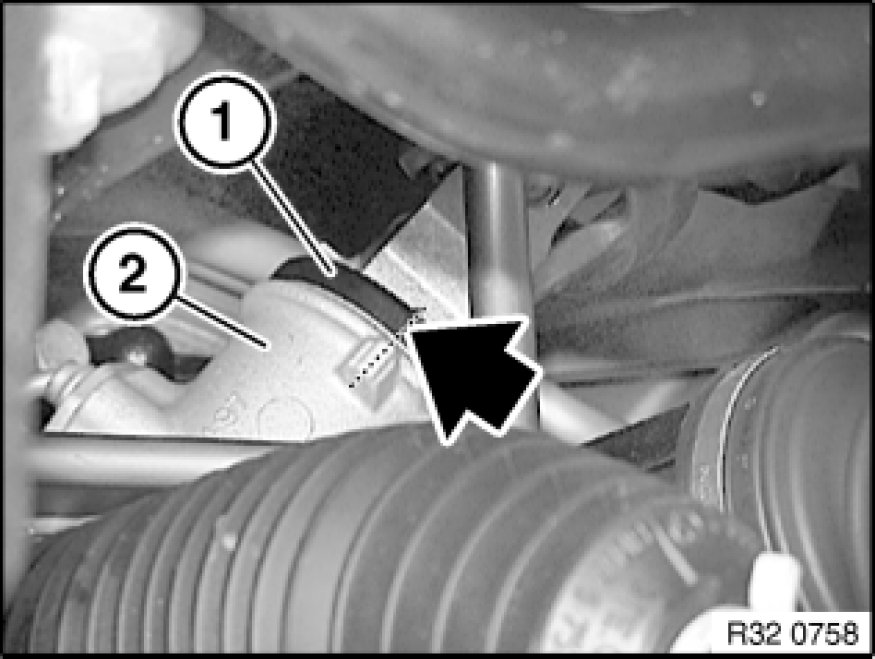
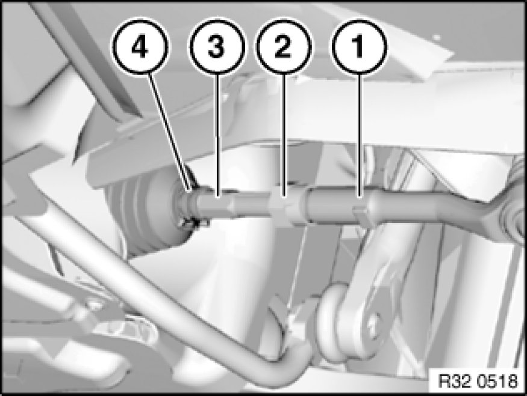
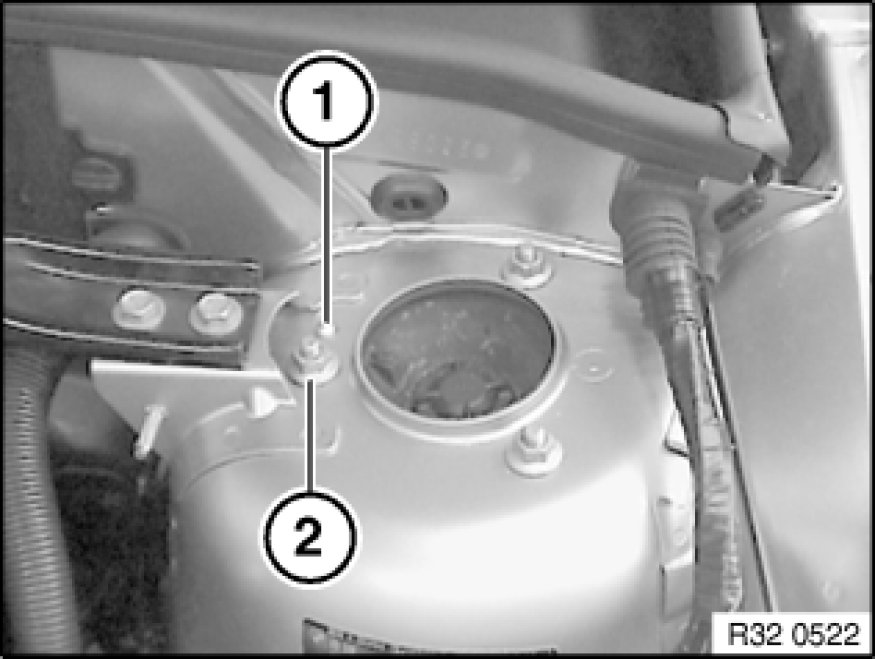
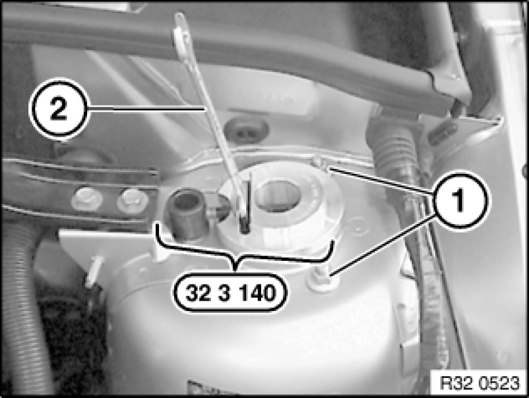
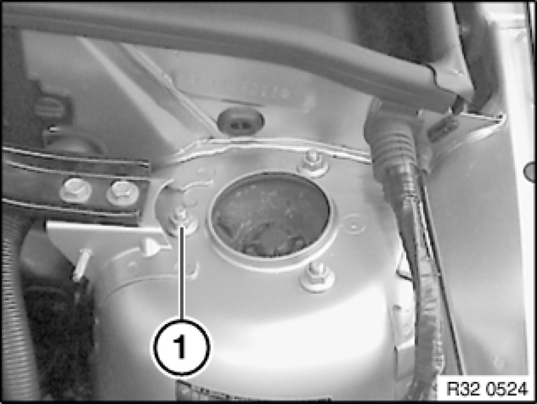

Adjusting Toe-In and Camber on Front Axle
32 00 610 - Adjusting toe-in and camber on front axle

Special tools required:
- 32 3 140 32 3 140 Setting Tool

Important!
Changes in axle geometry caused by accidents must under no circumstances be rectified by camber adjustment!
Note:
Camber and toe-in influence each other. Adjust the toe-in first in order to simplify the adjustment procedure.
The centering pin may only be driven or twisted out if the camber is outside the specified tolerance after toe adjustment.

Adjust toe-in:
If necessary, remove steering gear cover at side
Move steering into straight-ahead position by means of markings on cap (1) and steering gear (2).
Align steering wheel and secure with steering wheel arrester.

Clean thread on tie rod.
Slacken clamping nut (2), gripping tie rod end (1) in the process.
Remove clamp (4).
Turn tie rod (3) to adjust toe-in to specified value.
Tighten down clamping nut (2).
Tightening torque 32 21 5AZ [1][2]Specifications.
Fit clamp (4).

Adjusting camber:
Remove protective cap.
Knock out centering pin (1) in downwards direction.
Clean wheel arch from below in area of support bearing with compressed air.
Slacken nut (2) approx. 1 to 1.5 turns.

Insert special tool 32 3 140 32 3 140 Setting Tool into wheel arch opening and over nut.
Replace nuts (1) and screw on but do not tighten down fully.
Turn nut in special tool 32 3 140 32 3 140 Setting Tool using open-end wrench (2) to adjust camber to specified value.
Tighten down nuts (1).
Tightening torque 31 31 1AZ Spring Struts (Front).
Remove special tool 32 3 140 32 3 140 Setting Tool.

Replace nut (1) and tighten down.
Tightening torque 31 31 1AZ Spring Struts (Front).

After installation:
- Check directional stability of vehicle; if necessary, repeat toe-in adjustment